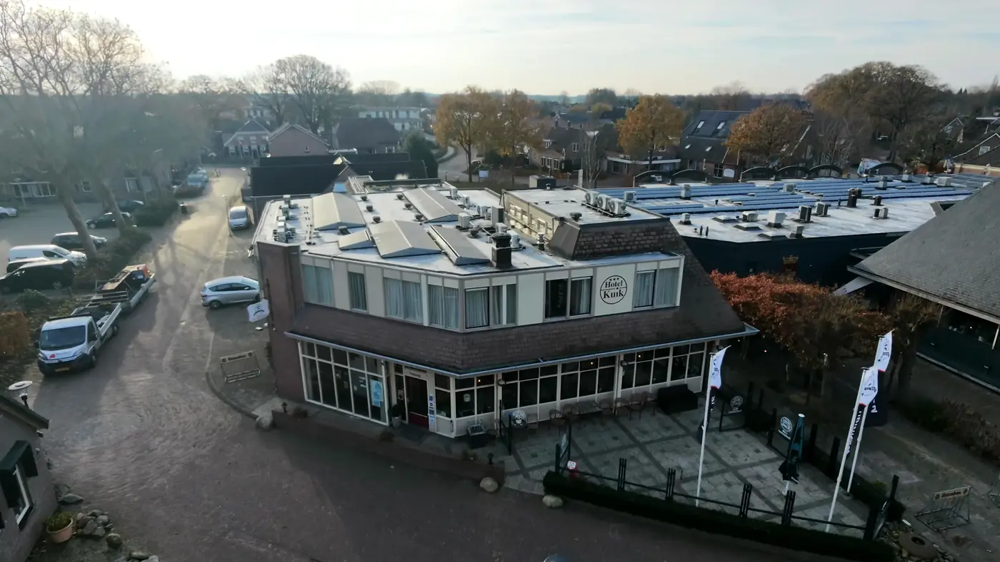
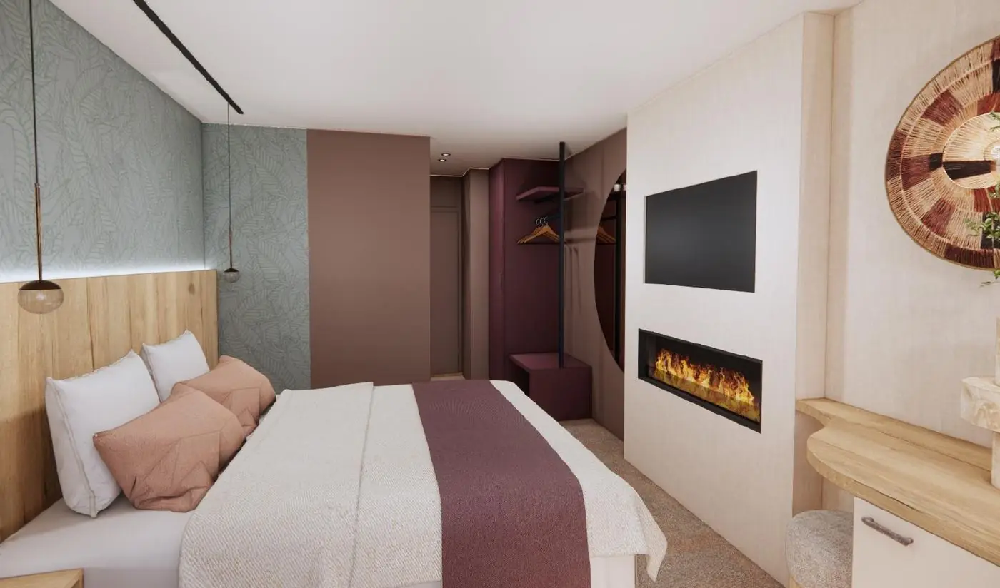
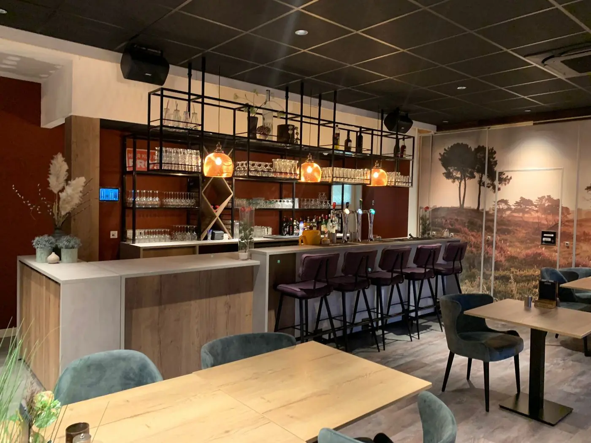

Welkom in Hotel Kuik, aan de Brink in Ruinen
Tegenover de oude Mariakerk, midden in Ruinen en vlak bij het Dwingelderveld. Comfortabele kamers, een keuken met streekproducten en een terras met uitzicht over de Brink.
Kamer boeken

Overnachten met halfpension
Elke ochtend een uitgebreid ontbijt, elke avond een 3-gangendiner. Overdag wandelt of fietst u door bos en heide.
- 24 tot 27 decemberKerst aan de Brinkvanaf € 1802 nachten met ontbijt en elke avond een 3-gangendiner
- Warme Wintertruivanaf € 180
- Vrolijk Voorjaarvanaf € 185
- Zonnig Zomervanaf € 190
Per persoon voor 2 nachten, op basis van halfpension.
Alle arrangementen
Buffetten voor uw feest
Voor verjaardagen, jubilea en uitvaarten. Royaal, met streekproducten, en steeds bijgevuld.
- Meest gekozenKoud en warm buffetvanaf € 29,50
- Meest gekozenStamppotbuffetvanaf € 27,50
- Drentse koffietafelvanaf € 14,50
- Dessertbuffetvanaf € 10,00
Per persoon. Ook ragout, high tea, brunch en pannenkoeken.
Buffet aanvragenWat gasten zeggen
8,5gemiddelde waardering van gasten op Goedverblijf.nl
9,7voor het ontbijt op Booking.com
Het ontbijt was uitgebreid en alles stond op tafel klaar, koffie en broodjes kwamen ze brengen als je zat.

Koffie, lunch of een borrel
Het café is voor iedereen open. Bij de open haard, aan de bar of buiten op het terras met uitzicht over de Brink. Na een fietstocht staat de koffie met gebak klaar.
Elke dag serveren we een 3-gangendiner voor € 35,00 per persoon.
Lunch- en dinerkaart